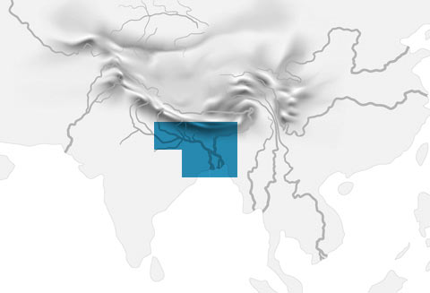

Upper Brahmaputra River Basin Hydrography Physical Geology Institute Regional Automated Hydrologic Data Collection Program Bangladesh and United Kingdom 1985–2008 3
Seasonal Snowpack Physical Geology Institute Regional Automated Hydrologic Data Collection Program Bangladesh and United Kingdom 1985–2008 3
 Forest Cover Physical Geology Institute Regional Automated Hydrologic Data Collection Program Bangladesh and United Kingdom 1985–2008 3
Nepal Historical Weather Physical Geology Institute Regional Automated Hydrologic Data Collection Program Bangladesh and United Kingdom 1985–2008 3
Total Brahmaputra River Sediment Load Physical Geology Institute Regional Automated Hydrologic Data Collection Program Bangladesh and United Kingdom 1985–2008 3
Groundwater Pumping and Irrigation Physical Geology Institute Regional Automated Hydrologic Data Collection Program Bangladesh and United Kingdom 1985–2008 3